Network
PspWxp uses the WiFi conection of yout PSP. It allows to connect to Internet and surf in web pages.
Configuring PSP WiFi connection
1. Go to network settings.
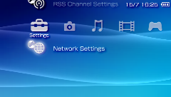
2. Select Infraestructure Mode
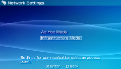
3. Click on [New Conection]
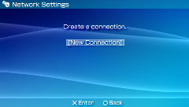
4. Click on Scan
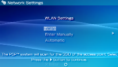
The system scans all wifi network around
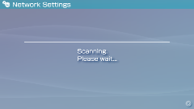
6. Select your wifi conection
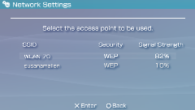
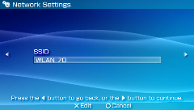
7. Select the security system of your router.
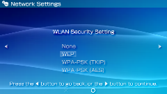
8. Introduct the WEP key (or WPA)
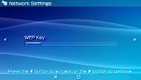
9. If your router has DHCP, click on Easy and jump to point 14. If not, select custom.
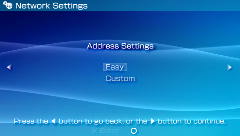
10. Select Manual
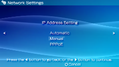
11. Type the IPs of your router
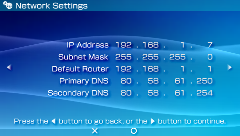
12. Select Do Not Use
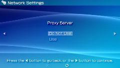
13. Select Do Not Start
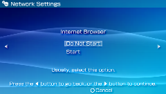
14. Enter the conection name
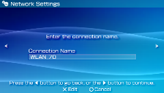
15. Check if all is OK
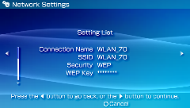
16. Press the X button to save settings. System saves it, and displays this screen
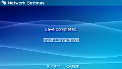
17. Press X and if all is OK, you have configurated your wfi connection!
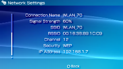
Related tasks
| PspWvista Internet Browser | |
| PSP Internet Browser recomended settings |